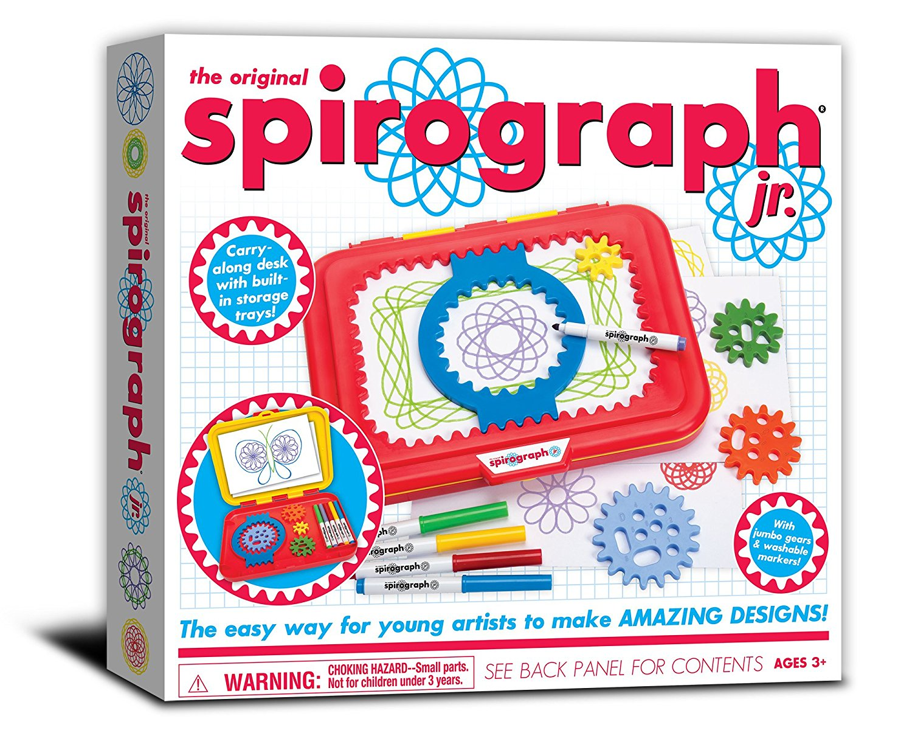

Right now, our main competitor is the Spirograph from Kahootz, as shown below, which is their take on using roulette curves to allow kids and adults alike to experience and create the mind blowing patterns. However, our product, as shown above, is fundamentally better and more accessible because it is done automatically. After selecting options like size and pattern type, users will be well on their way to creating masterpieces that can be used as wall paintings, logo design, or various art projects. The applications are endless! A main benefit of our product is that it will be great for use in schools for students to learn basics gear and motor concepts, or use at homes where users may not be physically able to enjoy the process manually due to disabilities or other motor skill deficiencies. Or finally, use it if a user finds themselves in a rush or needs to multitask, they can let the bot do its thing to save time and work more efficiently.
